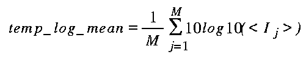
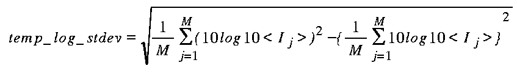

ANSI-C program: temp_log_var.c
NAME
temp_log_var - Estimate (logarithmic) mean and standard deviation
of co-registered data sets of format float.
SYNOPSIS
temp_log_var <data_tab> <mean> <stdev>
<width> [waz] [wr] [wt_flag] [zero_flag] [loffset]
[nlines]
| <data_tab> | (input) single column list of the names of input data files (float) |
| <mean> | (output) temporal variability, standard deviation in dB(float) |
| <stdev> | (output) temporal variability (stdev/pow(mean,norm_pow)) (float) |
| <width> | number of samples/row |
| [waz] | spatial averaging filter width in azimuth pixels (default = 1.0) |
| [wr] | spatial averaging filter width in range pixels (default = 1.0) |
| [wt_flag] | weighting function flag (weighting function (0:uniform (default) 1:linear 2:gaussian) |
| [zero_flag] | zero_flag (0: data value 0.0 interpreted as missing data (default)) |
| [loffset] | offset to starting line (default = 0) |
| [nlines] | number of lines to process (0:entire file (default)) |
EXAMPLE
temp_log_var data_tab log_mean log_stdev 4912 9 9 1 0 0
500
The data_tab input file is a single column with the names of the 5 input data files:
14002.rmliDESCRIPTION
temp_log_var calculates the temporal mean and normalized standard
deviation of multi-temporal, co-registered SAR intensity images,
based on the spatially averaged image values in logarithmic (dB)
scale.
The basic equations used to estimate the temporal mean and normalized standard deviation are:


where:
j= 1, ... ,M: file number
M: number of input files
Ij: Input intensity of image
j
temp_lin_mean: temporal mean (using linear
scale)
temp_lin_stdev: temporal normalized standard
deviation (using linear scale)
For the estimation of the spatial averages of the input intensity images a moving weighted averaging filter is used. The user can select between different weighting functions and indicate the filter window size in range and azimuth. The spatial averaging uses the linear scale (absolute values, not dB values). Logarithmic scale is only used for the temporal averaging and standard deviation calculation.
The standard deviation of the local mean (estiamted by spatial averaging) of the backscatter intensity expressed in logarithmic (dB) scale is an useful measure for the temporal variability of the backscattering. Null (0.0) values in the input file can either be interpreted as missing data (by setting zero_flag = 0), or as valid data values.
There is the option to process a sub-section of the input data by indicating the ofset to the starting line (the default=0 indicates to start with the first data line) and number of lines to process.
For M registered input files temp_log_var generates mean and standard deviation output files. To produce M filtered output images use the program temp_filt. To calculate the temporal averaging and standard deviation based on the spacially averaged values in linear scale, use the program temp_lin_var In addition the program lin_comb has the facility to calculate linear combinations of M registered input files.
SEE ALSO
lin_comb, temp_log_var, temp_lin_var, typedef_ISP.h .